UDN
Search public documentation:
DevelopmentKitGemsRacerStarterKitJP
English Translation
中国翻译
한국어
Interested in the Unreal Engine?
Visit the Unreal Technology site.
Looking for jobs and company info?
Check out the Epic games site.
Questions about support via UDN?
Contact the UDN Staff
中国翻译
한국어
Interested in the Unreal Engine?
Visit the Unreal Technology site.
Looking for jobs and company info?
Check out the Epic games site.
Questions about support via UDN?
Contact the UDN Staff
UE3 ホーム > Unreal Development Kit Gems > Racer Starter Kit
UE3 ホーム > 入門編 : プログラミング > Racer Starter Kit
UE3 ホーム > 入門編 : プログラミング > Racer Starter Kit
Racer Starter Kit (レーサースターターキット)
2011年7月に UDK に即して最終テスト実施済み
概要
このスターターキットにはサンプルコードが含まれており、自動車レースゲームを開発する際の土台として使用することができます。
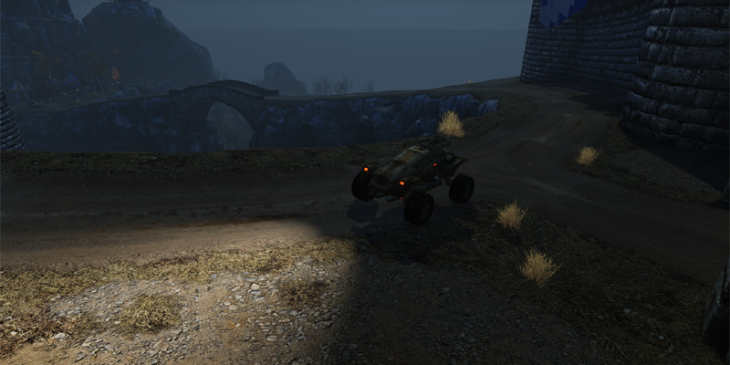

同梱されているものについて
- シンプルな車両 (SRG_Vehicle + SRG_VehicleCameraProperties) - このビークル (乗り物) は単純なビークルです。プロパティを使用してアーキタイプ化することが可能です。また、これらプロパティは、VehicleCameraProperties アーキタイプ内に格納されているプロパティを利用してカメラをオーバーライドします。
- カスタムの Kismet (SRG_SeqAct_ConcatenateStrings + SRG_SeqAct_VehicleTeleport) - カスタムの Kismet シーケンスアクションノードが 2 つあります。1 つは、Kismet によって 2 つの文字列が連結されるようにすることができるものです。もう 1 つは、ビークルを他のアクタの位置にテレポートさせることができるものです。
- アーキタイプ化されたビークルを使用するゲーム情報 (SRG_GameInfo) - このゲーム情報によって、アーキタイプ化されたビークルがプレイヤーのために作成され、アーキタイプ化された武器がプレイヤーに渡されます。ここでアーキタイプが使用される理由は、ゲームデザイナーが再コンパイルすることなくパラメータを素早く調整することができるためです。
- サンプルのマップ - Epic の「Citadel」 を改変したバージョンが含まれています。これには、レーシングゲームをシミュレートするのに必要となる Kismet ゲームロジックも全て伴っています。す。
コード / Kismet の構造
カメラはどのように機能するか?
「Unreal Engine 3」におけるデフォルトのカメラの実装では、プレイヤーの現在のポーンまたはビークルによって、カメラの位置と回転がオーバーライドされます。これは、CalcCamera 内で行われます。SRG_Vehicle の中でその実装を確かめることができます。デフォルトでは、SRG_Vehicle によって三人称視点のカメラが実装されています。 SRG_VehicleCameraProperties を使用することによって、どのようなタイプの三人称視点カメラ (トップダウンや背後からの視点など) にもすることができます。この例では、カメラのオフセットは、背後からの視点のカメラにセットされています。 まず潜在的なカメラの位置を計算し、さらに、ビークルの位置と潜在的なカメラの位置間においてトレースすることによって、カメラ自体がワールド内部に埋没してしまわないようにすることができます。これは、次のような理由によります。すなわち、トレースが、(bWorldGeometry のフラグをチェックすることによって) ワールドの一部として見なされるアクタにヒットすると、(ヒット法線を使用することによって少しばかりのオフセットが適用されて) 潜在的なカメラの位置が、ヒットした位置に合わせられることになるからです。トレースが何もヒットしなければ、元の潜在的なカメラ位置が使用されます。 カメラの回転は、ビークルの位置とカメラの位置間における方向を調べることによって実行されます。これは、カメラの回転のための Rotator (ローテータ) に変換されます。これによって、カメラの位置およびポーンの位置にかかわらず、常にビークルの方向を向くカメラを作成することができます。 最後に、FOV (視野角) を処理します。そのためには、ビークルの相対速度に基づいて、SRG_VehicleCameraProperties のアーキタイプ内に格納されている最小値と最大値を線形補間します。相対速度を求めるには、ビークルの速度ベクターの大きさを得てから、さらに、ビークルの最大速度でその値を割ります。これによって、他のカーレーシングゲームでよく見かけるプルアウト効果が出るため、運転をしていると速度を感じることができます。マップのスタート地点でプレイヤーはどのようにしてビークルを得るのか
デフォルトでは、「Unreal Engine 3」によって、プレイヤーのコントロールするポーンがスポーンされます。このビヘイビアを変更するには、自身のサブクラス化した GameInfo クラス内にある RestartPlayer という関数をオーバーライドします。RestartPlayer が呼び出されると、まず、適切な Player Start を探します。それが見つからない場合は、プレイヤーは restarted (再スタート) しません。最初は、シンプルなポーンがプレイヤーに与えられます。「Unreal Engine 3」では通常、ビークルを運転する前にプレイヤーがポーンをコントロールすることになっているためです。ポーンがプレイヤーによって所有されると、SpawnDefaultVehicleFor 関数を使用してビークルをスポーンします。ビークルをスポーンする前にポーンにコリジョンが起きないようにします。こうすることによって、コリジョンによる侵犯問題が原因となってビークルがスポーンに失敗することはなくなります。ビークルをスポーンすると、プレイヤーのポーンは、新たにスポーンされたこのビークルを運転しようとします。 SpawnDefaultVehicleFor は、GameInfo の SpawnDefaultPawnFor と同様のメソッドを使用します。ただし、SpawnDefaultVehicleFor ではそのためにアーキタイプ化されたビークルを使用します。この場合にアーキタイプが使用された理由は、ビークルに修正を加えるのに、ソースコードを再コンパイルする必要がないからです。つまり、「Unreal」エディタ内でビークルを変更することができるとともに、ただちにその変更をテストすることができるということになります。concatenate (連結) Kismet ノードはどのように機能するか
この Kismet ノードが有効になっている場合は、ValueA (値 A) と ValueB (値 B) を単に読み取り、ConcatenateWithSpace に基づいてスペースを使用して連結させるか否かを決めます。連結した結果は、StringResult に出力します。これらの変数は、「Unreal Engine 3」によって自動的にセットされ、適切に VariableLinks (変数リンク) を設定します。そのためには、PropertyName (プロパティ名) を変数名にセットします (Kismet 変数によって自動的に変数が満たされるようにします)。これは、bWriteable フラグを使用して逆のやり方を取ることも可能です (Unrealscript の値に基づいて Kismet 変数が自動的に更新されます)。teleport vehicle (テレポートビークル) Kismet はどのように機能するか
この Kismet ノードが有効になっている場合は、まず、Vehicle と Destination をそれぞれ SVehicle と Actor にキャストしようとします。このようにする理由は、これらのフィールドが Kismet によって自動的に満たされる一方で、Objects として満たされることによります。キャストに成功したならば、ビークルをチェックして、ビークルがメッシュをもつとともに、物理が PHYS_RigidBody (物理_剛体) にセットされるようにします。その理由は、SetRBPosition および SetRBRotation 、SetRBLinearVelocity 、SetRBAngularVelocity は、ビークルの位置 (position) および回転 (rotation)、線速度 (linear velocity)、角速度 (angular velocity) をセットする必要があるためです。また、これらすべてが必要となるのは、SetLocation および SetRotation を使用すると、PhysX シミュレートアクタのために機能しないためです。ゲームは全体的にどのように機能するか
ゲームは、Kismet を使用して実際のゲームロジックの大部分を制御することによって機能します。 ゲームがまず起動すると、カメラがフライバイを実行する Matinee の再生を開始します。この間、スクリーン全体が、ゲーム開始のためのタッチに反応します。プレイヤーのビークルはすでにスポーンされていますが、通常は視界から隠されています。プレイヤーがスクリーンにタッチしてゲームのプレイを開始すると、プレイヤーのビークルが最初のチェックポイントまでテレポートされます。 多数のトリガーがマップ全体に分布しています。トリガーは 2 種類あります。1 つは、音および映像による情報をトリガーするもので、プレイヤーのガイドとして役立ちます。もう 1 つのトリガーは、チェックポイントと得点を扱うものです。トリガーは赤い縁取りで表示されます。一方のトリガーはリンゴのような外見であり、他方のトリガーはスイッチのように見えます。
多数のトリガーがマップ全体に分布しています。トリガーは 2 種類あります。1 つは、音および映像による情報をトリガーするもので、プレイヤーのガイドとして役立ちます。もう 1 つのトリガーは、チェックポイントと得点を扱うものです。トリガーは赤い縁取りで表示されます。一方のトリガーはリンゴのような外見であり、他方のトリガーはスイッチのように見えます。
 プレイヤーが音映像のトリガーにタッチすると、道路の標識と副運転士が、「左に曲がれ」とか「右に曲がれ」などと指示を出します。
プレイヤーが音映像のトリガーにタッチすると、道路の標識と副運転士が、「左に曲がれ」とか「右に曲がれ」などと指示を出します。
 プレイヤーがチェックポイントのトリガーにタッチすると、まず、チェックポイントがセットされます。そこからリモートイベント (remote event) が実行されます。これは、 Kismet をすっきりとしたものにしておくために実行されるものです。
プレイヤーがチェックポイントのトリガーにタッチすると、まず、チェックポイントがセットされます。そこからリモートイベント (remote event) が実行されます。これは、 Kismet をすっきりとしたものにしておくために実行されるものです。
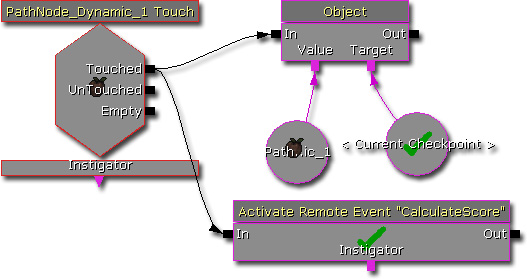
このリモートイベントは、プレイヤーに与えられるスコアを計算します。この計算では、WorldInfo から現在の時間を取得するとともに、前回のチェックポイント時間の減算を行い、さらに定数で除算することによって、チェックポイントのスコアを出し、それを現在のスコアに加えます。この間、前回のチェックポイント時間は、現在の時間にセットされます。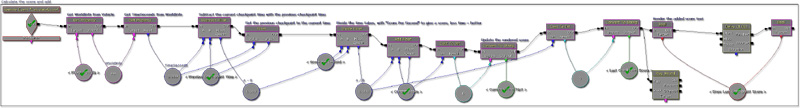
Kismet を利用して、以上のように、シンプルなレーシングゲームの基本的な構造が作られています。ゲームはどのようにテクスチャをスクリーン上にレンダリングするか
これは、HUD レンダリング機能を使用して Kismet が実行します。global な bool 型 Kismet 変数を使用することによって、標識のレンダリングが必要になる場合 / 必要にならない場合に、単に有効 / 無効になります。音映像の Kismet シーケンスでこのことが確認できます。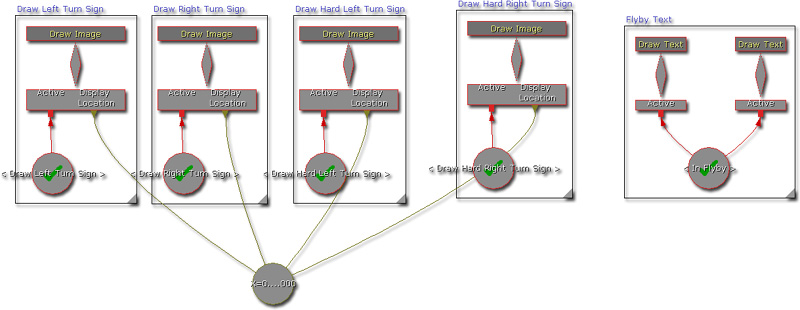
ゲームはどのようにリスタートを処理するのか
ゲームをリスタートすると、4 つのことが実行されます。これは、Remote Event (リモートイベント) から派生する 4 つのブランチによって示されているとおりです。- (トップから) 最初のブランチは、プレイヤーのビークルをリセットします。まず、プレイヤーへのフィードバックとして、ビークルの始動音を Kismet が再生します。次に、正しいチェックポイントが、レベル内のプレイヤーのスタートに割り当てられます。最後に、ビークルが正しいチェックポイントにテレポートされ、カメラのターゲットがプレイヤーのビークルに再度セットされます。
- 第 2 のブランチは、モバイルの入力ゾーンを設定します。ゲームが終了すると、ビークル制御の入力ゾーンがすべて除去されます。
- 第 3 のブランチは、前回のチェックポイント時間を、プレイヤーがゲームをリスタートする時間にセットします。
- 第 4 のブランチは、スコアをリセットするとともに、スコアのテキストをクリアします。

ゲームはどのようにゲーム終了を処理するのか
ゲームの終了は、プレイヤーのビークルが、レースの最後にあるトリガーに触れることによって起こります。Kismet が次の各インストラクションを実行します。- カメラのターゲットをレベル内のカメラアクタにセットすることによって、レースの終了をより映画的なものにする。(必要ならば、これを拡張して Matinee を再生することもできます)。
- 現在の入力ゾーンをすべてクリアすることによって、プレイヤーがこれ以上ビークルを運転できないようにする。
- プレイヤーへのフィードバックとしてレースの終了音を再生する。
- ゲーム終了テキストを作成する。これは、スコアとプレイヤーへのメッセージを組み合わせたものです。
- ゲーム終了テキストのレンダリングシーケンスを有効にする。
- ゲームスコアテキストのレンダリングシーケンスを無効にする。
- ゲームのリスタートボタンを加える。
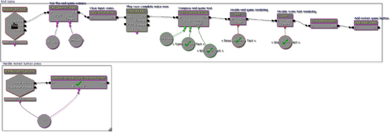
このスターターキットの使用方法
- UDK を ダウンロード します。
- UDK をインストールします。
- zip ファイルを ダウンロード します。
- その中身を解凍して、UDK のベースディレクトリに入れます。 ( 例 C:\Projects\UDK-2011-08\) Windows から、「既存のファイルまたはフォルダがオーバーライドされることになるかもしれない」という内容の通知を受ける場合があります。すべて [OK] をクリックします。

- Notepad を使って、 UDKGame\Config ディレクトリ内にある DefaultEngine.ini を開きます。 ( 例 C:\Projects\UDK-2011-08\UDKGame\Config\DefaultEngine.ini)

- EditPackages を見つけます。
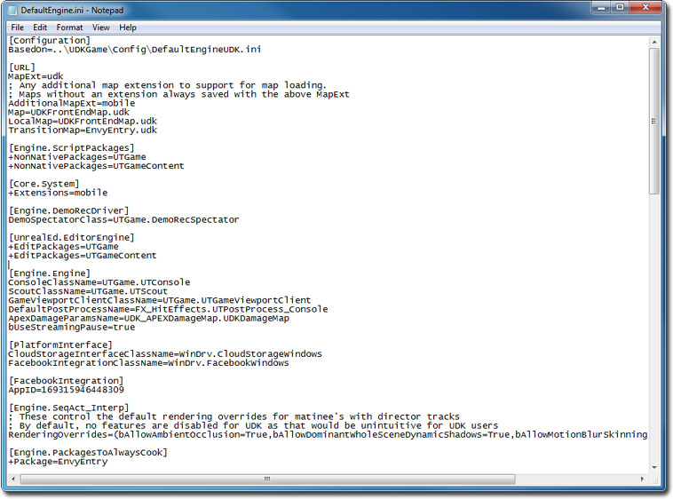
- +EditPackages=StarterRacerGame を追加します。
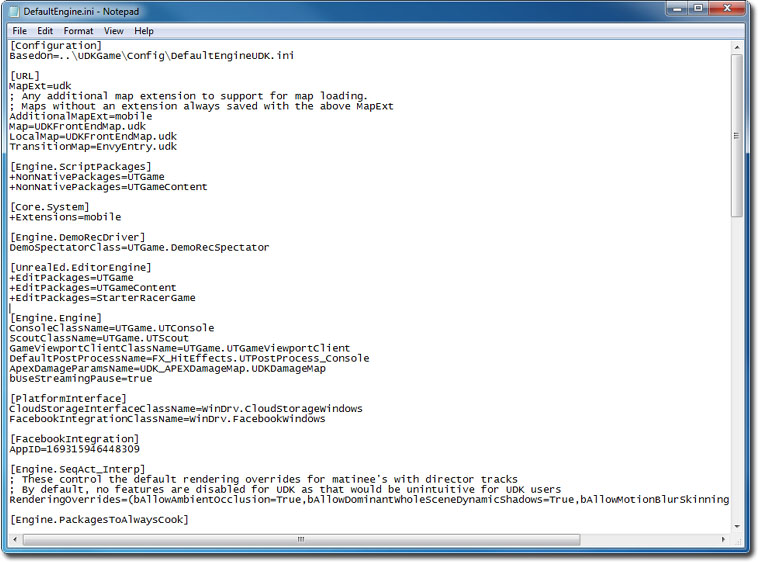
- Binaries ディレクトリ内にある Unreal Frontend Application を起動します。 ( 例 C:\Projects\UDK-2011-08\Binaries\UnrealFrontend.exe)

- [ Script ](スクリプト) をクリックし、さらに、 Full Recompile (フル再コンパイル) をクリックします。

- StarterRacerGame パッケージが最後にコンパイルされているのが確認できるはずです。
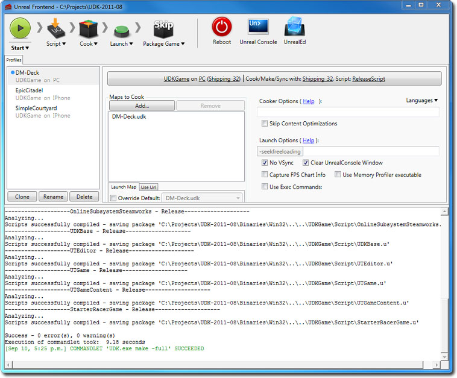
- UnrealEd をクリックして、「Unreal」エディタを開きます。
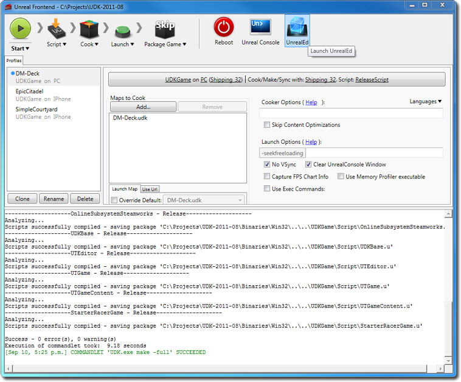
- [ Open ] ボタンをクリックして、 StarterRacerMap.udk を開きます。
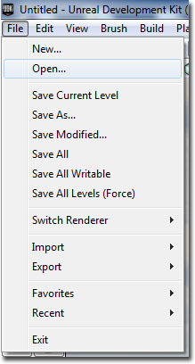

- [ Play In Editor ] (エディタでプレイする) ボタンをクリックして、Racer Starter Kit をプレイします。
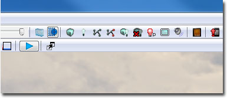
ダウンロード
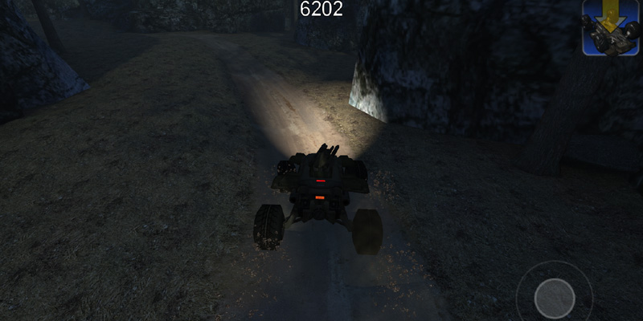
このスターターキットで使用されるコードとコンテンツは、 ここから ダウンロードすることができます。
{kind=link}
{kind=link}
{kind=link}